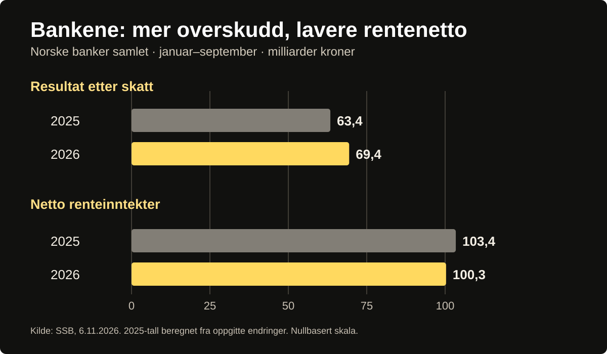

Bankene tjener milliarder – hvem betaler?
Norske banker hadde tjent 69,4 milliarder kroner etter skatt ved utgangen av september. Samtidig er rentenettoen lavere enn i fjor. Hvor kommer milliardene fra, hva koster banktjenestene oss, og hvorfor er bankenes overskudd både en kilde til irritasjon og et vern mot kriser?

En boliglånsrente er sjelden et samtaleemne til middag før den begynner å spise av pengene som var satt av til noe annet. For banken er den samme renten en inntektskilde, men ikke hele fortellingen om hvordan pengene tjenes. Bak en rente på et skjermbilde ligger en virksomhet som tar imot innskudd, skaffer finansiering, låner ut penger, dekker tap og må bygge opp kapital til neste krise.
Det er dette motsetningsforholdet som gjør de ferske banktallene interessante. Statistisk sentralbyrå opplyste 6. november at norske bankers samlede resultat etter skatt var 69,4 milliarder kroner i årets første ni måneder. Det var seks milliarder mer enn i tilsvarende periode året før. Beløpet gjelder bankenes samlede akkumulerte resultat til og med tredje kvartal, ikke ett enkelt kvartal og heller ikke et årsresultat.
Kilde: SSB – Lavere rentenetto for bankene, 6. november 2026. Tallene gjelder januar–september samlet.
Overskuddet steg. Rentenettoen falt.
Rentenetto er forskjellen mellom rentene bankene får inn og rentene de betaler, blant annet på innskudd og annen finansiering. SSBs tall viser at den samlede netto renteinntekten var 100,3 milliarder kroner til og med tredje kvartal 2026. Det er om lag 3,1 milliarder kroner mindre enn i samme periode i fjor.
Kilde: SSB – bankresultat og netto renteinntekter, 6. november 2026.
Hva betyr «rentenetto» – og hvorfor er den ikke overskudd?
Rentenetto er bankenes renteinntekter minus rentekostnader. Det er ikke det samme som fortjenesten etter skatt. Driftskostnader, gebyrinntekter, verdipapirresultater, utlånstap og skatt påvirker det endelige resultatet.
Derfor kan samlet resultat etter skatt stige samtidig som rentenettoen faller.
Begge utviklingene kan være sanne samtidig: Bankene fikk et høyere samlet resultat etter skatt selv om rentenettoen sank. Derfor er det misvisende å forklare hele overskuddet med at boliglånskundene betaler for mye. Et bankresultat påvirkes også av gebyrer og provisjoner, verdipapirinntekter, utgifter, utlånstap og skatt.
Se forskjellen: overskudd opp, rentenetto ned


Vis tallene som tabell
| Størrelse | 2025 | 2026 | Endring |
|---|---|---|---|
| Resultat etter skatt | 63,4 | 69,4 | +6,0 |
| Netto renteinntekter | 103,4 | 100,3 | −3,1 |
Kilde: SSB, 6. november 2026. Utregning av 2025-verdier: 69,4 − 6,0 og 100,3 + 3,1.
SSB oppgir kredittap på rundt 5,6 milliarder kroner så langt i 2026, bare svakt høyere enn året før. Det er et viktig poeng, fordi en bank som låner ut penger, ikke bare har rett til renteinntekter, men også må tåle at en del av lånene aldri blir tilbakebetalt.
Hva betaler én kunde?
For husholdninger handler ikke debatten først og fremst om en samlet milliardsum. Den handler om rentedifferansen mellom det banken tilbyr dem, og vilkårene de faktisk kunne ha fått.
SSB publiserte 29. oktober nye renter for september 2026. I månedsutvalget av banker og kredittforetak var gjennomsnittlig rente på utestående boliglån 5,31 prosent, på nye boliglån 5,30 prosent, mens husholdningenes innskuddsrente var 3,16 prosent. Tallene beskriver gjennomsnitt for ulike produkter og kundegrupper. Differansen mellom boliglåns- og innskuddsrente er ikke identisk med bankenes overskudd eller faktiske rentemargin etter finansiering, drift, tap og kapitalbehov.
Kilde: SSB – Renter i banker og kredittforetak, september 2026, tabell 1. Målingene gjelder et månedsutvalg.
Norges Bank vedtok 4. november å holde styringsrenten uendret på 4,50 prosent, med virkning fra 6. november. Styringsrenten påvirker bankenes finansieringskostnader og utlånsrenter over tid, men sier ikke direkte hvilken effektiv rente den enkelte kunde skal tilbys.
Kilde: Norges Bank – rentebeslutning publisert 5. november 2026. Uendret styringsrente på 4,50 %.
Tidslinje: Norges Banks rentevedtak i 2026
Trykk på et vedtak for å lese begrunnelsen. Dette er styringsrenten, ikke boliglånsrenten. Datoene er offentliggjøringsdatoene.
Styringsrenten heves fra 4,00 til 4,25 %
Komiteen besluttet rentehevingen 6. mai og kunngjorde den dagen etter. Les Norges Banks pressemelding.
Styringsrenten heves fra 4,25 til 4,50 %
Komiteen begrunnet økningen med behovet for å dempe prisveksten. Les Norges Banks pressemelding.
Styringsrenten holdes på 4,50 %
Beslutningen ble tatt 4. november og offentliggjort 5. november. Les Norges Banks pressemelding.
Kilde: Norges Banks pressemeldinger for mai, september og november 2026. Virkningstidspunkt kan avvike fra vedtaksdato.
Forbrukerrådets Finansportal viser for eksempel at en renteforbedring på et halvt prosentpoeng sparer en låntaker 5 000 kroner årlig per million kroner i boliglån, før eventuelle skatteeffekter. Da er det lett å forstå hvorfor noen ser milliardresultatene som et argument for å forhandle hardere.
Kilde: Finansportalen – sammenligning av boliglån. Regneeksemplet er enkelt: 0,5 prosentpoeng × 1 million kr = 5 000 kr i årlig renteforskjell før skatt.
Men et gjennomsnittstall om bankenes overskudd sier ikke hvilken rente en enkelt kunde bør få. Det krever sammenligning av lånebeløp, sikkerhet, belåningsgrad, løpetid, finansieringskostnader og tilgjengelige konkurrerende tilbud. Forbrukerrådet råder kundene til å sammenligne banker regelmessig. At en pris kan forhandles ned, betyr heller ikke at alle kunder automatisk får samme tilbud.
Den andre siden av regnestykket
Banker som tjener penger, kan bygge egenkapital og dekke tap uten at kredittgivningen stopper opp ved første økonomiske tilbakeslag. Norges Bank understreker i sin rapport om finansiell stabilitet i 2026 at norske banker er solide, likvide og lønnsomme, og at inntjeningen er førstelinjeforsvaret mot tap. Finanstilsynet fremhever også god soliditet, samtidig som tilsynet advarer mot risiko i deler av bedriftsmarkedet.
Kilder: Norges Bank – Finansiell stabilitet 2026; Finanstilsynet – Finansielt utsyn, juni 2026.
Det er et reelt argument for lønnsomhet – ikke et svar på enhver innvending mot prisene. Tvert imot gir solide banker grunn til å stille mer presise spørsmål: Hvor mye må holdes tilbake som kapital? Hvor mye utbetales til eiere? Hvor hard er konkurransen om å tilby husholdningene gode betingelser?

Slik går pengene gjennom banken
En forenklet forklaring på hvorfor forskjellen mellom boliglånsrente og innskuddsrente ikke er rent overskudd.
Grunnlag: SSBs bankstatistikk og Norges Bank – Finansiell stabilitet. Skjematisk forklaring, ikke et regnskap for en enkelt bank.
Næringen har også en egen fortelling om konkurransen. I en gjennomgang publisert 5. november skriver Finans Norge at de seks største norske bankenes netto renteinntekter økte 3 prosent fra andre til tredje kvartal 2026, samtidig som bankene rapporterer press på marginene fra konkurransen. De seks bankenes samlede egenkapitalavkastning var 13,4 prosent i tredje kvartal. Dette er en annen populasjon og et annet tidsintervall enn SSBs akkumulerte resultattall for hele banksektoren; tallene kan derfor ikke sammenlignes direkte. Bransjeorganisasjonens forklaring bør testes mot uavhengige data, ikke tas som endelig bevis for at konkurransen fungerer godt.
Bransjekilde: Finans Norge – Sterkt tredje kvartal, 5. november 2026. Gjelder seks store banker, ikke hele SSBs bankpopulasjon.
Finans Norge utdypet også forklaringen i et skriftlig svar til Paradisavisa 10. november. Organisasjonen peker på at markedsfinansieringen normalt reagerer raskt ved en renteheving, mens renteøkninger på eksisterende boliglån slår inn senere på grunn av varslingsfristen. Norges Bank satte styringsrenten opp fra 4 til 4,25 prosent i mai 2026. Ifølge Finans Norge er denne tidsforskyvningen en del av forklaringen på variasjonene mellom andre og tredje kvartal. Dette er bransjens vurdering, ikke dokumentasjon på at alle boliglånskunder har fått de beste betingelsene.
Et uavhengig innblikk i hvor raskt renteendringer slår gjennom, finnes i Forbrukerrådets analyse fra 20. mai 2026. Den sammenligner når banker justerte tilbudene til nye boliglånskunder etter styringsrenteendringer. I renteoppgangsperioden 2021–2023 var medianen for standardlån 12,8 dager, mens medianen i de to rentenedsettelsene i 2025 var fire dager. Analysen viser betydelig variasjon mellom banker og låneprodukter, men målene er fra ulike perioder med ulikt antall renteendringer. Den forteller ikke hvor raskt en eksisterende kunde fikk ny rente på sitt eget lån. Det er derfor ikke et direkte motbevis mot Finans Norges forklaring om varslingsfrist på eksisterende lån.
Kilde: Forbrukerrådet – Fra styringsrente til utlånsrente, 20. mai 2026. Gjelder tilbud til nye kunder, ikke eksisterende boliglån.
Det er forskjell på å kunne bytte bank og faktisk å gjøre det. I den offentlige Bytteundersøkelsen 2026 og Forbrukerrådets oppsummering 11. mai oppgir omtrent én av tre boliglånskunder å ha flyttet eller reforhandlet boliglånet sitt i 2025, en økning fra året før. Av dem som ikke gjorde det, oppgir nær en tredjedel at de aldri har flyttet eller reforhandlet. Dette viser både aktivitet og passivitet, men forklarer ikke alene bankenes overskudd eller hva den enkelte burde betale.
Forbrukerrådet peker også på totalkundeprogrammer som en mulig binding: I den offentlig publiserte omtalen oppgis slike programmer som hovedårsaken til ikke å bytte eller reforhandle for halvparten av respondentene som både hadde et kundeprogram og ikke hadde flyttet eller reforhandlet. Dette gjelder altså en avgrenset gruppe, ikke halvparten av alle bankkunder. For den enkelte låntaker må sammenligningen bygge på effektiv rente, gebyrer og faktiske lånevilkår.
Kilde: Forbrukerrådet – Bytteundersøkelsen 2026. Prosentangivelsen gjelder den særskilte gruppen som beskrives i avsnittet.
Hvem er bankens kunde – og hvem er banken til for?
Det samme bankmarkedet har flere parter: låntakeren som ønsker lavere rente, spareren som vil ha høyere rente, ansatte som skal drive banken, eiere som ønsker avkastning, og samfunnet som trenger at pengesystemet virker også når økonomien blir urolig. Det kan ikke reduseres til at én av gruppene betaler for alle de andre, uten mer dokumentasjon.
Det finnes likevel et konkret spørsmål å undersøke: Hvorfor må en trofast kunde ofte selv be om en bedre rente for å få del i konkurransen? Og hvor stor del av overskuddet er knyttet til tjenester kundene vanskelig kan velge bort?
Hva bør veie tyngst i debatten om bankene?
Et spørsmål til deg som leser, ikke en representativ meningsmåling. Svaret lagres bare i nettleseren din, og ingen felles stemmetall samles inn.
Denne avstemningen trenger JavaScript; den er ikke en offentlig opptelling.
Du valgte:
Dette er bare ditt lokale svar – ikke en offentlig stemmeopptelling.
Det samlede overskuddet alene sier ikke hvor effektiv konkurransen er. For å vurdere det må vi også se på sammenlignbare boliglåns- og innskuddsvilkår, bankenes kostnader, utlånstap, kapitalbehov og hvor enkelt kundene faktisk kan bytte leverandør. Tallene i denne saken belyser ulike deler av bildet, men gir ikke ett enkelt mål på om hver enkelt kunde betaler en rimelig rente.
Bankenes milliardresultat er derfor både et tegn på inntjening og et rimelig utgangspunkt for kritiske spørsmål. Det avgjørende er ikke bare hvor mye bankene tjener, men om kundene har reelle valgmuligheter og om lønnsomheten bidrar til et finanssystem som tåler tap.
Kilder og dokumentasjon
- SSB, publisert 6. november 2026: «Lavere rentenetto for bankene». Bekrefter akkumulerte resultater, rentenetto og kredittap til og med tredje kvartal. https://www.ssb.no/bank-og-finansmarked/finansinstitusjoner-og-andre-finansielle-foretak/statistikk/banker-og-kredittforetak/artikler/bankresultat
- SSB, oppdatert 6. november 2026: «Banker og kredittforetak», tabell 6. https://www.ssb.no/bank-og-finansmarked/finansinstitusjoner-og-andre-finansielle-foretak/statistikk/banker-og-kredittforetak
- SSB, oppdatert 29. oktober 2026: «Renter i banker og kredittforetak», tabell 1. Nye og utestående boliglån, innskuddsrente. https://www.ssb.no/bank-og-finansmarked/finansinstitusjoner-og-andre-finansielle-foretak/statistikk/renter-i-banker-og-kredittforetak
- Forbrukerrådet/Finansportalen: Årlig spareeksempel ved 0,5 prosentpoeng renteendring og sammenligningstjeneste. https://www.forbrukerradet.no/finansportalen/bank/
- Norges Bank, rentebeslutning 5. november 2026: Styringsrenten er 4,50 prosent fra 6. november. https://www.norges-bank.no/tema/pengepolitikk/Rentemoter/2026/november-2026/
- Norges Bank, 24. september 2026: Styringsrenten hevet til 4,50 prosent. Pressemelding fra Norges Bank.
- Norges Bank, 7. mai 2026: Styringsrenten hevet fra 4,00 til 4,25 prosent. Norges Banks pressemelding
- Norges Bank: «Finansiell stabilitet 2026–1. halvår», om lønnsomhet, kapital og risiko. https://www.norges-bank.no/aktuelt/publikasjoner/Finansiell-stabilitet---rapport/2026-1-finansiell-stabilitet/nettrapport-2026-1-finansiell-stabilitet/
- Finanstilsynet: «Finansielt utsyn – juni 2026», bankenes lønnsomhet og risiko. https://www.finanstilsynet.no/publikasjoner-og-analyser/finansielt-utsyn/finansielt-utsyn---juni-2026/html/2026/
- Finans Norge (bransjekilde): Analyse av seks største bankenes tredje kvartal, publisert 5. november 2026. Kildegrunnlag: kvartalsrapporter fra disse bankene, ikke hele SSB-populasjonen. https://www.finansnorge.no/artikler/2026/11/sterkt-tredje-kvartal/
- Forbrukerrådet (forbrukerperspektiv), 11. mai 2026: Bytteundersøkelsen 2026 om boliglån, prut og bankbytte. https://www.forbrukerradet.no/rapporter/bytteundersokelsen-2026/
- Forbrukerrådet, 11. mai 2026: Oppsummering med kundetall og forbrukerperspektiv. https://www.forbrukerradet.no/?p=54728
- Forbrukerrådet, 20. mai 2026: Fra styringsrente til utlånsrente – hvor raskt endrer bankene utlånsrenta? Analyse av nye kundepriser på Finansportalen. Rapport fra Forbrukerrådet
Kildene er knyttet til tallene og påstandene i teksten. Den forstørrbare grafen sammenlikner akkumulerte tall for samme ni måneder. Avstemningen er en lokal demonstrasjon og sier ingenting om hva andre lesere mener.